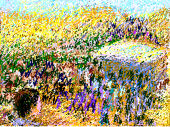
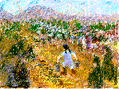
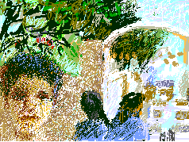

Those days of 1967, in the valley of the Jordan River, are etched in Hamad's memory. As a child he saw the Palestinians as they came like a river of pain. They were thirsty and hungry, walking in the burning sun, robbed of everything, searching for safety from Israeli aggression. He remembers the man who turned his coffee shop into a rest station for them. For days he served water and shade and the welcome of an Arab brother to the thirsty and weary. Sabah was walking coming as a child to her life in the camp.

Sabah mentions the hardships of the first years in the refugee camp. The horrendous journey across the broken bridge and the raging waters and the terrorism of Israeli soldiers pales in contrast to the hardships of life on a crowded cold muddy plain without food or shelter. She is haunted by sudden wild shock in the absence of a home. "It was cold and muddy and it was my duty to bring drinking water in buckets from far away. I was twelve. My boots sank in the mud every painful step". We returned, she and I, to Bak'a camp to visit the orphanage she helped to build.

Sabah struggled to survive in the camp, to rebuild the disrupted social relations, to find work, and to preserve her optimism. From the years of activism she remembers her love. Her face becomes beautiful. This beauty is a jewel embedded in the harshness of the camp. The birth of her daughter, Sanabel, focused all the loss into one moment. Sabah suffered a stroke. Her life is the other side of privalege -- Israelis privileged to steal her home, her land, and burden her life. She and her husband, workers, worked hard and moved out of the camp.
My Grandmother... The Town of Beisan... The Arab City of Jerusalem... Sabah Told Me... My Home in Yafa... Khader Told Me... Olives of Palestine... Our Students... A Taxi Ride in Bethlehem... Written by Doctor Fathihe Saudi... Hasan Told Me... A Visit to Kafr Qasem... The Artist of Kafr Qasem... The Massacre at Kafr Qasem (not yet ready)
Tayseer Barakat, painter... Rana Bishara, painter and installation artist... Sari Khouri, painter... Abdel Tamam, painter... Vera Tamari, ceramist and painter... Adnan Yahya, painter and graphic artists...